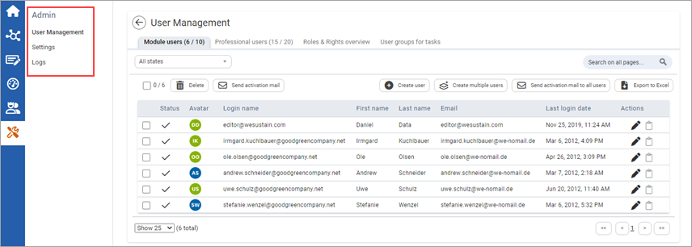

Users with administrator access will see the ADMIN area in their menu. This area allows you to centrally manage individual users' access rights and create new access accounts for the portal.
The Admin area comprises the following modules:
